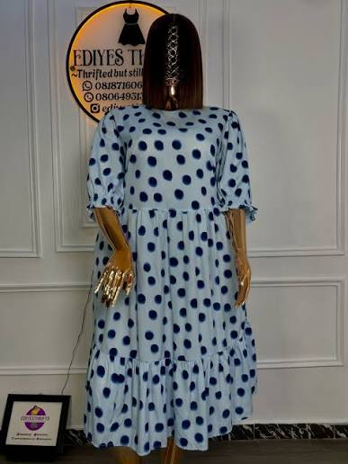

Good finds are better shared
Pull up
a chair.
Join EDIYESTHRIFTS on Facebook for community updates, fresh finds, and more reasons to love a wardrobe with a little history.
Find us on Facebook ↗Facebook · EDIYESTHRIFTS

THE CLASSICEasy to wear, hard to miss.
 THE EASY ONESoft shape, strong style.
THE EASY ONESoft shape, strong style.
 THE LITTLE EXTRABring your own sparkle.
THE LITTLE EXTRABring your own sparkle.